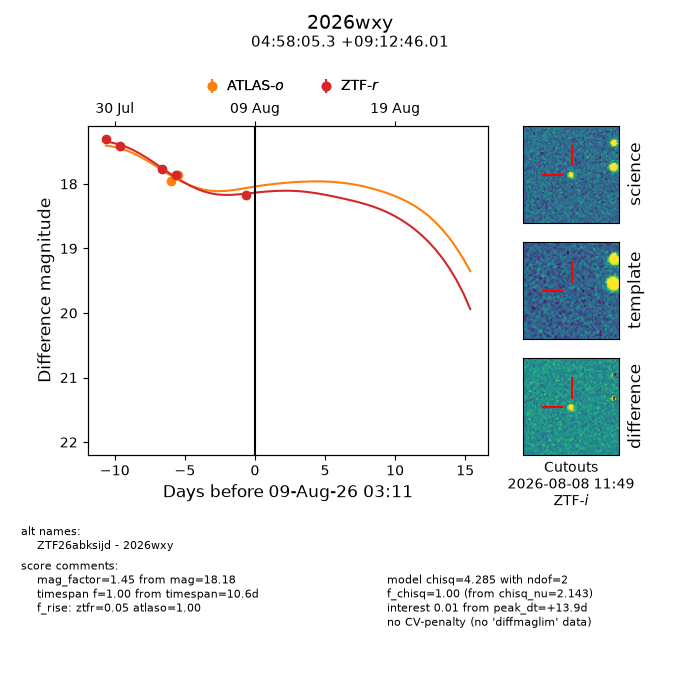
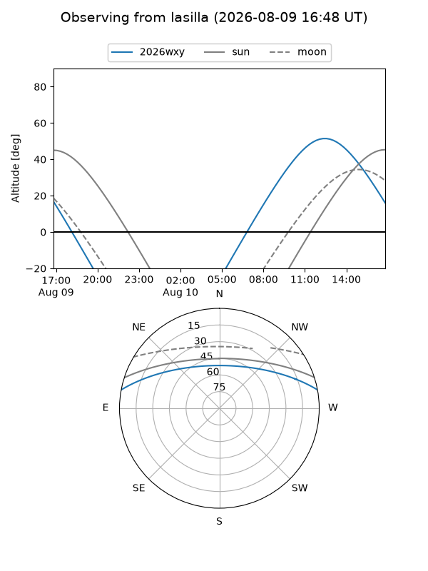
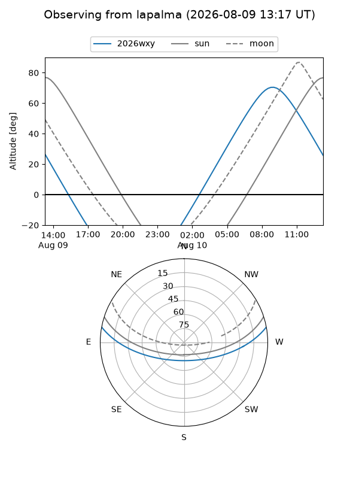
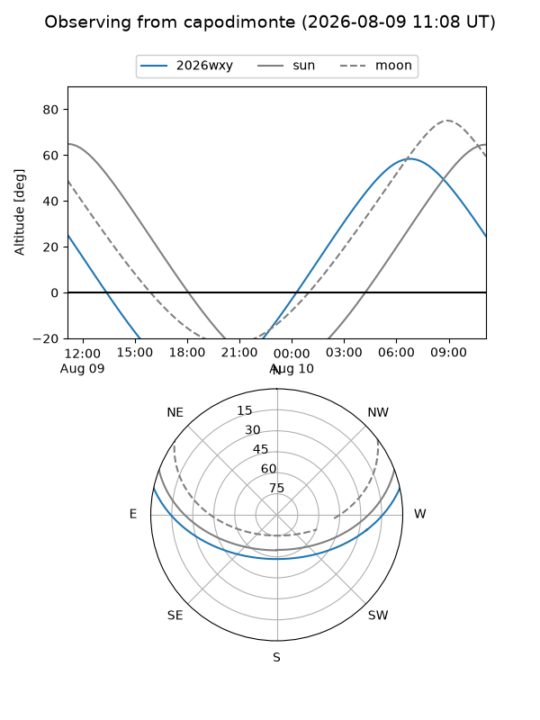
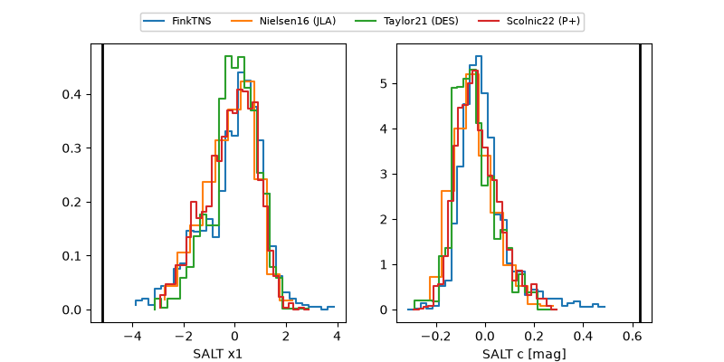

2026wxy
Target 2026wxy at 2026-08-09 15:12
Aliases and brokers:
FINK-ZTF: ztf.fink-portal.org/ZTF26abksijd
Lasair-ZTF: lasair-ztf.lsst.ac.uk/objects/ZTF26abksijd
ALeRCE-ZTF: alerce.online/object/ZTF26abksijd
YSE-PZ: ziggy.ucolick.org/yse/transient_detail/2026wxy
TNS name: wis-tns.org/object/2026wxy
Direct TNS query: direct search
alt names
ZTF26abksijd (ztf,fink_ztf)
2026wxy (tns,yse)
Coordinates:
equatorial (ra, dec) = 74.5222,+9.21278
equatorial (HMS+DMS) = 04:58:05.32,+09:12:46.01
galactic (l, b) = (190.6428,-20.12017)
Flags:
TNS type: nan
peak dt: +14.4
Photometry:
last atlaso=17.86, ztfr=18.18
2 atlaso, 5 ztfr detections
Lightcurve

Visibility



Additional plots
